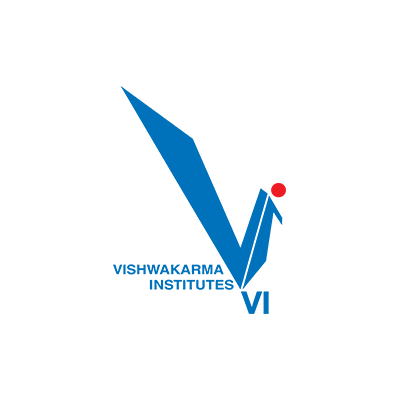
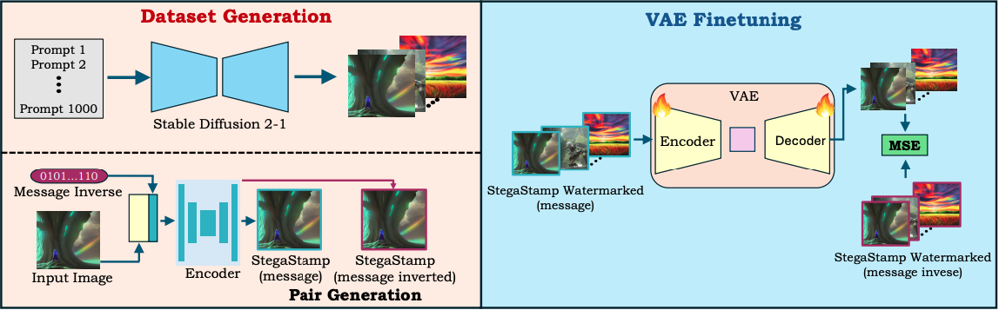
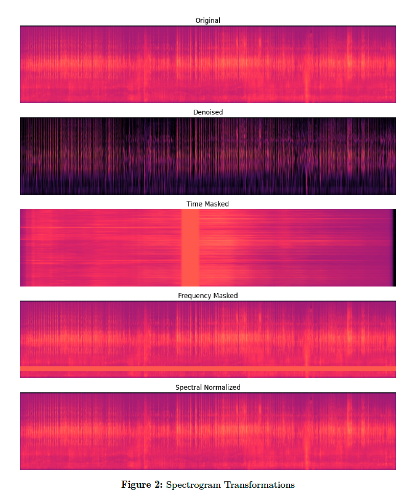
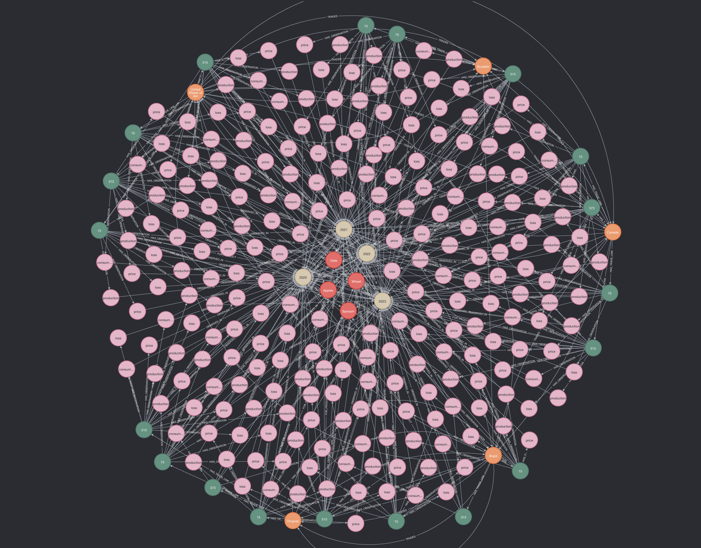

Building a taxonomy and search system for 1,800 marine species with genomic metadata, delivering Django REST + PostgreSQL APIs consumed by web and mobile clients. Implemented quick species lookup via indexing, query optimization, and real-time filtering and a dataset gallery.
San Diego, CA
Varadraj Bartakke
MS Data Science @UCSD
Master's in Data Science at UC San Diego with hands-on experience building ML systems, GenAI applications, end-to-end data pipelines and scalable backend & data infrastructure.
About Me
I'm a Master's student in Data Science at UC San Diego. I transitioned into data and AI to work on problems that scale from building RAG pipelines and LLM evaluation frameworks at Johnson & Johnson to designing data pipelines and REST APIs as a Senior Data Engineer at LTIMindtree.
I care about clear metrics, maintainable systems, and deploying solutions. My work spans GenAI & LLMs, classical ML, backend development, and cloud/MLOps.
- University of California, San Diego
- M.S. Data Science · GPA 4.00 · Sept 2024 – Present (Expected March 2026) · San Diego, USA
- Vishwakarma Institute of Technology, Pune
- B.Tech Mechanical Engineering · GPA 3.84 (9.63/10) · Aug 2018 – June 2021 · Pune, India

Professional Experience
Mentored 190 students in data science and programming, led weekly office hours and discussions anchored in real-world data modeling and project support. Created Python tutorial modules covering data modeling, PyTorch, JAX, machine learning, and statistics.
Built a RAG-based GenAI-assisted clinical document authoring workflow for healthcare data integrating retrieval, context building, summarization, fact-source attribution and evaluation. Developed a multimodal image-captioning system with LangChain & CLIP, achieving BLEU 0.62, METEOR 0.56, CLIPScore 0.97, deployed for scalable inference.
Architected scalable data pipelines, improving throughput by 40%, using AWS to ingest and process 5,000+ structured JSON & XML messages daily. Migrated 30+ back-end ETL jobs to AWS Lambda & Snowflake (Snowpark Python). Built end-to-end CI/CD data architecture, reducing deployment time by 30% using Jenkins and Agile.
Projects
Check out my academic and personal projects.

Invisible Image Watermarking Remover
VAE
Diffusion
PyTorch

LLM Post-Training against Adversarial Attacks
LoRA
SFT
DPO
Responsible AI

Bird Audio Classifier
PyTorch
CNN
Audio ML

3D Object Reconstruction
NeRF
SIFT
Computer Vision

Graph Data Modeling
Neo4j
PostgreSQL
NeoDash
AI-Assisted Database Query Benchmarking
RAG
XGBoost
NLP
Skills
Programming
Python (NumPy, Pandas, Scikit-learn), C++, FastAPI, Flask
Data & Analytics
SQL, NoSQL, PostgreSQL, Spark, Hadoop
Machine Learning
PyTorch, TensorFlow, GPU, CUDA, Deep Learning, CNN, LLM, VLM, NLP, JAX
GenAI & LLMs
LangChain, RAG, MCP, Agentic AI, Multi-modal Inference, Prompt Engineering
Cloud & DevOps
AWS, Snowflake, Docker, Kubernetes, Jenkins, CI/CD, Git
Tools & MLOps
Quantization, Pruning, Model Evaluation, Experiment Tracking
Backend
REST APIs, Django, PostgreSQL, Message Queues
Other
Hugging Face, RAGAS, LLM-as-a-Judge, OpenCV
Soft Skills
Communication, Collaboration, Problem Solving
Certifications
-
 IBM Data Science Certificate
IBM Data Science Certificate
-
 Snowflake SnowPro Core Developer
Snowflake SnowPro Core Developer
-
 AWS Certified Cloud Practitioner
AWS Certified Cloud Practitioner
FAQ
Do I require sponsorship?
I can start work on F1-OPT, however I will need H-1B sponsorship later.
When can I start?
Available immediately.
Am I open to relocate?
Open to relocate anywhere throughout US.
What roles am I looking for?
Machine Learning Engineer, AI Engineer, Data Scientist, Data Engineer.